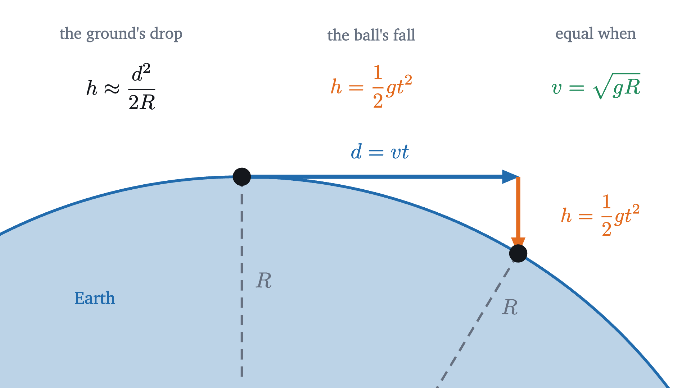
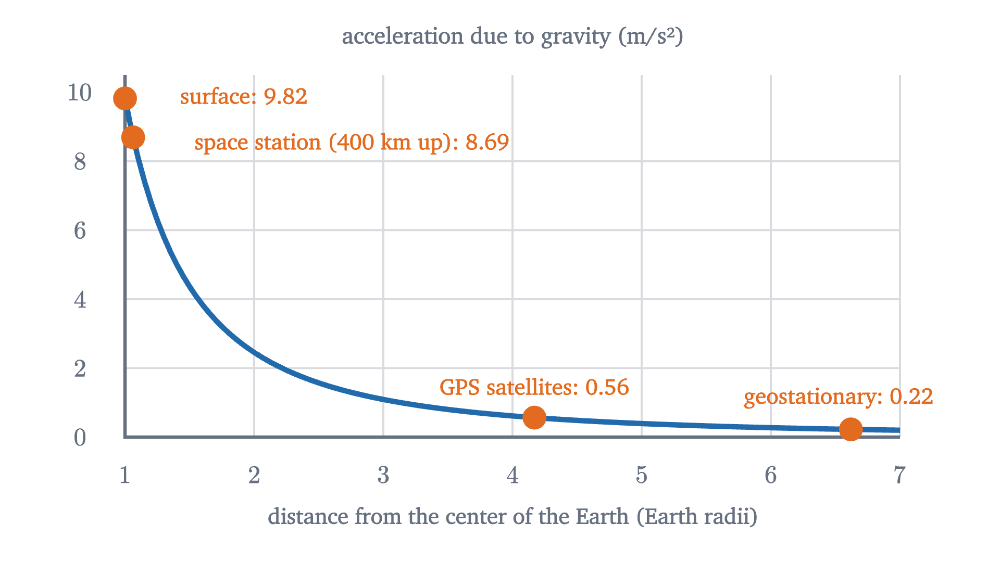
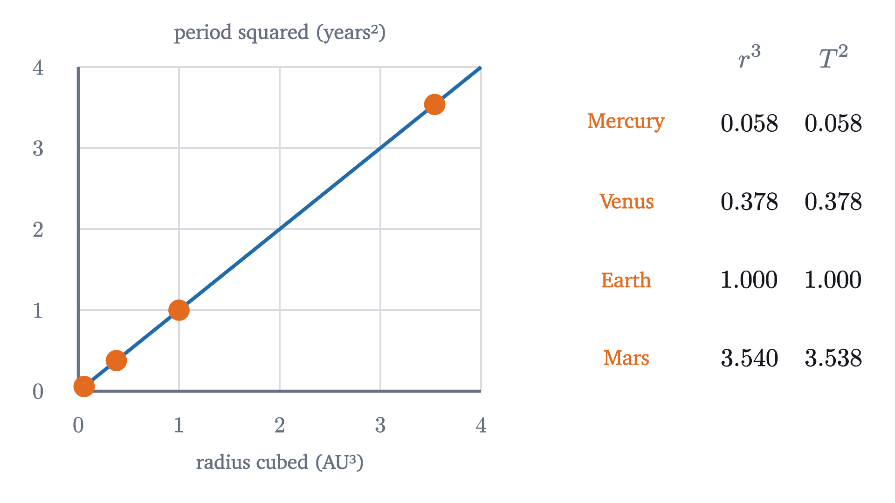
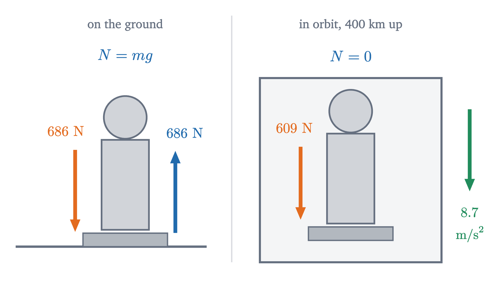

Circular motion, gravity and why the Moon doesn't fall
The acceleration v²/r of circular motion, derived from the velocity triangle, and what it says about satellites, Kepler's third law and weightlessness.
AssumesNewton's second law, F = ma: what force really doesProjectile motion: dropped and fired bullets land together
The Earth pulls on the Moon with a force of about $2 \times 10^{20}$ newtons. Nothing holds the Moon up. So why has it not fallen on us?
The usual answers are that gravity is weak out there, or that some outward force balances it. Both are wrong. The Moon is falling: it has been falling toward the Earth without pause for four billion years, and it gets no closer. To see how that can be, we first have to settle what acceleration means for something moving in a circle.
Changing direction is accelerating
Whirl a puck on a string around a peg on an air table, at a steady speed. Then cut the string.
The puck does not fly outward from the peg, and it does not keep curving. It goes straight, along the tangent to the circle at the point where it was released. That is Newton’s first law: with no net force, velocity stays constant in size and in direction.
Run the logic backward. While the puck was on the circle its speed was constant and its direction was not, so its velocity, which is a vector, was changing all the time. A changing velocity is an acceleration, and by the second law an acceleration needs a net force. The string supplied it, and the string can only pull toward the peg. Moving in a circle at constant speed is accelerated motion, with the acceleration directed inward.
How large is the acceleration?
Take numbers. A car goes round a circular bend of radius $r = 100$ m at a steady $v = 20$ m/s. In $\Delta t = 0.5$ s it covers 10 m of arc, so the line from the center to the car turns through $10/100 = 0.1$ radians, and the velocity arrow turns through the same angle, since it is always perpendicular to that line. The velocities at the start and end are two arrows of length 20 m/s with $0.1$ rad between them. Their difference $\Delta\vec v$ is the short side of a thin isosceles triangle, of length $2 \times 20 \times \sin(0.05) = 1.999$ m/s. So the average acceleration over that half second has size $1.999/0.5 = 3.998$ m/s².
Pause and try
Repeat the calculation for $\Delta t = 1$ s. Then compare both answers with $v^2/r$.
Show answerHide answer
In 1 s the car covers 20 m of arc and turns through 0.2 rad. $|\Delta\vec v| = 2 \times 20 \times \sin(0.1) = 3.993$ m/s, so the average acceleration is 3.993 m/s². And $v^2/r = 400/100 = 4$ m/s². The shorter the interval, the closer the average is to 4.
The number $v^2/r$ is no accident, and the triangle shows why.
The word centripetal means “center-seeking”. Check the units: $(\text{m/s})^2/\text{m} = \text{m/s}^2$. This is the fact that the lesson on energy borrowed for the loop-the-loop.
“Centripetal force” names a requirement on the net force, and some ordinary force has to meet it. No extra arrow goes on the diagram. The requirement is met by the string’s tension for the puck ($0.2 \times 2^2/0.5 = 1.6$ N), friction from the road for a car on a level bend, the track’s push for a roller coaster. For a satellite, it is gravity.
Newton’s cannonball
Now the Moon. Newton’s way in was a thought experiment. Stand on a very high mountain, above the air, and fire a cannonball horizontally. It is a projectile: it keeps its horizontal velocity and falls from the line of fire by $\tfrac12 gt^2$. Fire it faster and it lands farther away. But the Earth is round, so the ground also falls away from the line of fire.
Pause and try
The ball falls 4.9 m below its line of fire in the first second. The Earth’s radius is $R = 6370$ km. Over what horizontal distance $d$ does the Earth’s surface drop 4.9 m below a horizontal line? (Use the right triangle with sides $R$ and $d$ and hypotenuse $R + h$, and neglect $h^2$.) What does that suggest about a ball fired at $d$ meters per second?
Show answerHide answer
$(R + h)^2 = R^2 + d^2$ gives $2Rh + h^2 = d^2$, and since $h$ is tiny compared with $R$, $d^2 \approx 2Rh = 2 \times 6.37 \times 10^6 \times 4.9$, so $d = 7900$ m. A ball fired at 7.9 km/s has, after one second, fallen 4.9 m and traveled 7.9 km, and the ground has dropped away by the same 4.9 m. The ball is no closer to the ground than when it started.

In general, set the ground’s drop $d^2/2R$, with $d = vt$, equal to the ball’s fall $\tfrac12 gt^2$: the $t^2$ cancels and $v^2 = gR$. The speed for skimming the surface forever is
The centripetal theorem gives this in one line and without the small-$h$ approximation. A ball circling at radius $R$ needs acceleration $v^2/R$ toward the center. Gravity supplies an acceleration $g$ toward the center. So $v^2/R = g$. The two arguments are the same idea: an orbit is free fall in which the falling is entirely used up in turning. The opening animation shows it happening, with the paths computed from the law of gravity.
Gravity far from the ground
The Moon is far from skimming the surface: it is 384 000 km away, about 60 Earth radii, and takes 27.3 days to go round. If gravity out there were the same 9.8 m/s² as here, the Moon would need a speed of $\sqrt{9.8 \times 3.84 \times 10^8} = 61$ km/s. Its actual speed is about 1 km/s. So gravity must be much weaker at the Moon’s distance. How much weaker?
Pause and try
Compute the Moon’s centripetal acceleration from $a = 4\pi^2 r/T^2$, with $r = 3.84 \times 10^8$ m and $T = 27.3$ days $= 2.36 \times 10^6$ s. Compare it with $g = 9.8$ m/s². Then compare the ratio with the ratio of the distances from the Earth’s center, 60 to 1.
Show answerHide answer
$a = 4\pi^2 \times 3.84 \times 10^8 / (2.36 \times 10^6)^2 = 0.00272$ m/s². That is $9.8/0.00272 = 3600$ times smaller than $g$, and $3600 = 60^2$. At 60 times the distance, gravity’s acceleration is $60^2$ times weaker.
Newton made this comparison in the 1660s and found that the numbers “answer pretty nearly”. It is the evidence for an inverse-square law, which he then stated for all matter.
This is an experimental law. It is extremely accurate for planets, moons and spacecraft, and it is corrected by Einstein’s general relativity where gravity is very strong or precision is extreme. Dividing the force on a mass $m$ by $m$, the acceleration due to a planet of mass $M$ at distance $r$ from its center is $GM/r^2$. For the Earth, $M = 5.972 \times 10^{24}$ kg, so $GM = 3.986 \times 10^{14}$ m³/s², and at the surface $GM/R^2 = 9.8$ m/s², as it must be.

Orbits: speed, period and Kepler’s third law
Put the two results together for a satellite of mass $m$ in a circular orbit of radius $r$ around a planet of mass $M$. The only force on it is gravity, toward the planet’s center, and that must be the centripetal force:
The satellite’s mass has canceled, so a bolt and a space station at the same radius orbit side by side. There is no freedom in the speed: each radius has exactly one speed for a circular orbit, lower for larger orbits. (The assumption $M \gg m$ lets us treat the planet’s center as fixed. When the masses are comparable both bodies circle their center of mass.)
Johannes Kepler found the $T^2 \propto r^3$ rule in 1619 by staring at planetary data, with no dynamical explanation for why it held. With the Sun as the central body and units of years and astronomical units (the Earth’s orbital radius), the constant is 1, and the law says $T^2 = r^3$.

Worked examples
Weightlessness
Astronauts on the space station float. The tempting explanation is that there is no gravity up there, but the graph above says otherwise: at 400 km, gravity’s acceleration is 8.7 m/s², 89% of its value on the ground. If it were absent the station would leave along a tangent.
What you feel as your weight is the floor pushing up on you; gravity itself, acting equally on every part of you, cannot be felt. Stand on a bathroom scale: the scale reads the normal force $N$ it exerts on you. At rest, $N - mg = 0$, so it reads $mg$. In an elevator accelerating downward at $a$, $mg - N = ma$, so it reads $m(g - a)$, less than your weight. If the cable snapped and the elevator fell freely, $a = g$ and the scale would read zero.

An orbit is that free fall, continued indefinitely. The station and everything in it have the same acceleration, $GM/r^2$ toward the Earth, so the floor never has to push on the astronaut’s feet. In symbols, the astronaut needs net force $mv^2/r$, gravity supplies $GMm/r^2$, and for the orbit these are equal, leaving $N = 0$. Weightlessness is the absence of the supporting force. Gravity is fully present.
Limits and common mistakes
Everything here assumed circles. Real orbits are ellipses, of which the circle is a special case; Kepler’s third law survives with the radius replaced by half the long axis of the ellipse, a result we are citing. The cannonballs that landed in the first animation were on ellipses that happened to intersect the ground. The formula $a = v^2/r$ holds at each instant even when the speed is changing, but then it gives only the part of the acceleration perpendicular to the velocity, and there is another part along it.
Check yourself
A satellite in a circular orbit is moved to a new circular orbit with four times the radius. What happens to its speed and its period?
Problems
Use $g = 9.8$ m/s², $G = 6.674 \times 10^{-11}$ N·m²/kg², and for the Earth $M = 5.97 \times 10^{24}$ kg, $GM = 3.986 \times 10^{14}$ m³/s², $R = 6.371 \times 10^6$ m.
Problem 1
A 1200 kg car rounds a level bend of radius 50 m at 15 m/s. Find its acceleration, the force required and what supplies it, and the smallest coefficient of static friction that will do.
Show solutionHide solution
$a = v^2/r = 225/50 = 4.5$ m/s², toward the center of the bend. Force: $ma = 1200 \times 4.5 = 5400$ N, supplied by static friction between the tires and the road. Friction can be at most $\mu_s mg$, so we need $\mu_s \ge a/g = 4.5/9.8 = 0.46$.
Problem 2
A bucket of water is swung in a vertical circle of radius 0.9 m. What is the least speed at the top of the circle for which the water stays in the bucket? Why does it not fall out, given that gravity pulls it down and nothing holds it up?
Show solutionHide solution
At the top the water moves on a circle, so it needs acceleration $v^2/r$ downward, toward the center. The forces on it are gravity $mg$ and the push $N$ of the bucket’s bottom, both downward: $mg + N = mv^2/r$. The bucket can only push, so $N \ge 0$, which requires $v^2/r \ge g$: $v \ge \sqrt{gr} = \sqrt{9.8 \times 0.9} = 2.97$ m/s. The water is falling: at the least speed it is in free fall, accelerating downward at $g$. The bucket is accelerating downward just as fast, so the water does not leave it. Faster than that, the water would fall less steeply than the bucket turns, and the bucket has to push it down.
Problem 3
The Moon orbits at $r = 3.84 \times 10^8$ m with period 27.3 days. Using only these numbers and $G$, find the Moon’s speed and the mass of the Earth.
Show solutionHide solution
$T = 27.3 \times 86\,400 = 2.36 \times 10^6$ s. Speed: $v = 2\pi r/T = 2\pi \times 3.84 \times 10^8/2.36 \times 10^6 = 1020$ m/s. From $T^2 = 4\pi^2 r^3/GM$: $M = \dfrac{4\pi^2 r^3}{G T^2} = \dfrac{39.48 \times (3.84 \times 10^8)^3}{6.674 \times 10^{-11} \times (2.36 \times 10^6)^2} = 6.0 \times 10^{24}$ kg. An orbit weighs the body at its center. The mass of the Moon itself does not enter, and cannot be found this way.
Problem 4
Jupiter orbits the Sun at 5.20 astronomical units. Use Kepler’s third law to find its period in years. Then explain why you could not find the period of the Moon around the Earth from the same formula $T^2 = r^3$.
Show solutionHide solution
In years and astronomical units $T^2 = r^3$ for bodies orbiting the Sun, so $T = 5.20^{3/2} = 11.9$ years. The constant in $T^2 = (4\pi^2/GM)\,r^3$ contains the mass $M$ of the central body. It equals 1 in these units only when $M$ is the Sun’s mass. The Moon orbits the Earth, whose mass is 333 000 times smaller, so the constant is different: Kepler’s law compares satellites of the same central body.
Problem 5
A student says: “The astronauts on the space station are weightless, so gravity must be zero there. And since gravity is zero, no force acts on the station.” Find two errors, and compute the gravitational force on a 70 kg astronaut 400 km above the surface.
Show solutionHide solution
First error: weightlessness means the supporting force is zero, not gravity. Gravity’s acceleration at $r = 6.771 \times 10^6$ m is $GM/r^2 = 3.986 \times 10^{14}/(6.771 \times 10^6)^2 = 8.69$ m/s², so the force on the astronaut is $70 \times 8.69 = 609$ N, against 686 N on the ground. Second error: with no force the station would obey the first law and move in a straight line at constant speed, leaving the Earth along a tangent. It moves in a circle, so a net force toward the center must act on it, and gravity is that force.
Problem 6
Mars has mass $6.42 \times 10^{23}$ kg and radius 3390 km, and rotates once in 88 600 s. Find the radius and altitude of a “stationary” orbit above the Martian equator, and the satellite’s speed.
Show solutionHide solution
$GM = 6.674 \times 10^{-11} \times 6.42 \times 10^{23} = 4.285 \times 10^{13}$ m³/s². $r = \left(GM\,T^2/4\pi^2\right)^{1/3} = \left(4.285 \times 10^{13} \times (8.86 \times 10^4)^2/39.48\right)^{1/3} = (8.52 \times 10^{21})^{1/3} = 2.04 \times 10^7$ m, which is 20 400 km from the center and 17 000 km above the surface. Speed: $2\pi r/T = 2\pi \times 2.04 \times 10^7/8.86 \times 10^4 = 1450$ m/s. Check with $\sqrt{GM/r} = \sqrt{4.285 \times 10^{13}/2.04 \times 10^7} = 1450$ m/s.
Problem 7
Show that the period of a satellite skimming the surface of a uniform spherical planet depends only on the planet’s density $\rho$, and not on its size: $T = \sqrt{3\pi/(G\rho)}$. Evaluate it for the Earth ($\rho = 5510$ kg/m³). What does the result say about a small asteroid of the same density?
Show solutionHide solution
For an orbit at the surface, $r = R$ and $T^2 = 4\pi^2 R^3/(GM)$. A uniform sphere has $M = \rho \cdot \tfrac43\pi R^3$, so $T^2 = \dfrac{4\pi^2 R^3}{G\rho\,\tfrac43\pi R^3} = \dfrac{3\pi}{G\rho}$, and the radius has canceled. For the Earth: $T = \sqrt{3\pi/(6.674 \times 10^{-11} \times 5510)} = \sqrt{2.563 \times 10^7} = 5060$ s, about 84 minutes. An asteroid of the same density, however small, also has an 84 minute surface orbit. Its orbital speed $2\pi R/T$ is proportionally smaller: around a rock 1 km in radius it is 1.2 m/s, a walking pace.
Problem 8
The lesson derived $a = v^2/r$ from similar triangles. Here is a check that uses the quantitative step of the proof. A point moves at 10 m/s on a circle of radius 5 m. (a) Find $\Delta\theta$ for $\Delta t = 0.1$ s, the exact $|\Delta\vec v|$, and the average acceleration. (b) By what percentage does the average differ from $v^2/r$? (c) How small must $\Delta\theta$ be for the difference to be under 0.1%, given that $\sin x/x \approx 1 - x^2/6$ for small $x$?
Show solutionHide solution
(a) $\Delta\theta = v\,\Delta t/r = 10 \times 0.1/5 = 0.2$ rad. $|\Delta\vec v| = 2v\sin(\Delta\theta/2) = 20\sin(0.1) = 1.9967$ m/s. Average acceleration: $1.9967/0.1 = 19.967$ m/s². (b) $v^2/r = 100/5 = 20$ m/s². The average is low by $0.033/20 = 0.17\%$, in agreement with the factor $\sin(0.1)/0.1 = 0.99833$. (c) We need $1 - \sin x/x \approx x^2/6 < 0.001$ with $x = \Delta\theta/2$, so $x < \sqrt{0.006} = 0.077$ rad and $\Delta\theta < 0.155$ rad, about $9°$.